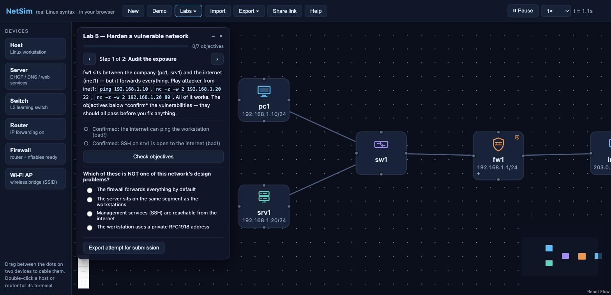

A free, open-source network simulator for teaching and design. Drag devices onto a canvas, configure them with genuine Linux commands, and watch every packet travel. No install, no accounts, no server.

Configure devices with ip addr, ip route, nft,
iptables, dig, curl and more. Unsupported syntax
errors loudly — you never learn a command that won't work on a real box.
Write nftables or iptables rules over one shared model. Stateful ct state,
NAT, and a log that names the exact rule behind every dropped packet.
ARP, IPv4 routing (static + RIP), ICMP, TCP/UDP, DHCP, DNS, HTTP, VLANs and Wi-Fi — all as animated packets you can pause and step through.
Five built-in labs from addressing to network hardening. The grader probes the live network with real packets; students export their attempt for submission.
Turn a design into real nftables.conf/dnsmasq.conf, a
containerlab or docker-compose file to run for real, SVG diagrams, or a printable report.
Autosaves locally. Hand out a scenario as a file or a single link with the whole topology encoded in it. No backend, ever.
Practise real networking and security on any device — build a topology, break it, fix it, and see exactly why each change worked.
Drop labs straight into your unit. Author your own with auto-graded objectives and collect attempts through your LMS — no infrastructure to run.
Prototype a firewall or a small network, then export a containerlab file and run the exact design on real kernels.
NetSim is a modern, open successor to the iNetwork Simulator, a GUI teaching tool built at the University of Technology Sydney in the mid-2000s (C#/.NET, Windows-only, described in an IEEE paper on teaching firewall concepts). NetSim reimagines it with today's constraints removed: it runs on anything with a browser, uses real open-source Linux syntax instead of an invented CLI, and is free and open source.